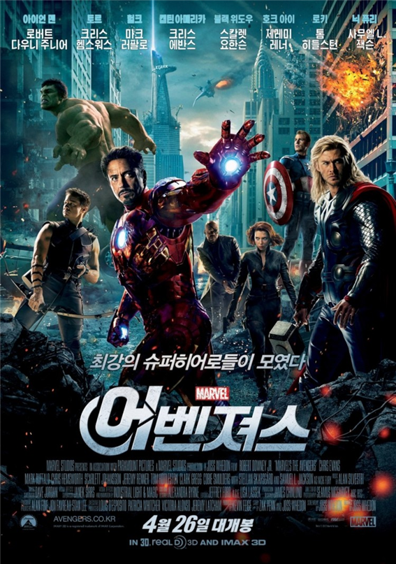
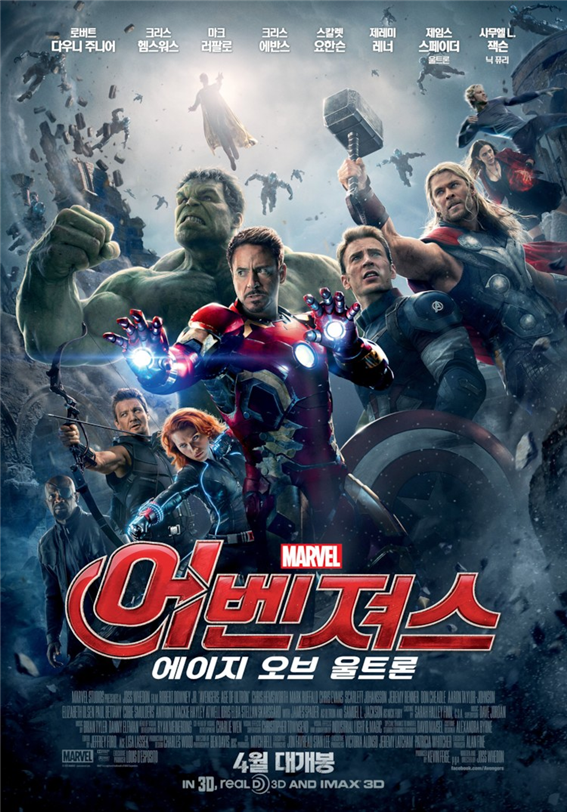

지구의 안보가 위협당하는 위기의 상황에서 슈퍼히어로들을 불러모아 세상을 구하는, 일명 [어벤져스] 작전. 에너지원 ‘큐브’를 이용한 적의 등장으로 인류가 위험에 처하자 국제평화유지기구인 쉴드 (S.H.I.E.L.D)의 국장 닉 퓨리(사무엘 L.잭슨)는 [어벤져스] 작전을 위해 전 세계에 흩어져 있던 슈퍼히어로들을 찾아나선다. 아이언맨(로버트 다우니 주니어)부터 토르(크리스 헴스워스), 헐크(마크 러팔로), 캡틴 아메리카(크리스 에반스)는 물론, 쉴드의 요원인 블랙 위도우(스칼렛 요한슨), 호크 아이(제레미 레너)까지, 최고의 슈퍼히어로들이 [어벤져스]의 멤버로 모이게 되지만, 각기 개성이 강한 이들의 만남은 예상치 못한 방향으로 흘러가는데…
쉴드의 숙적 히드라는 연구를 통해 새로운 능력자 막시모프 남매를 탄생시키고, 히드라의 기지를 공격하는 도중 토니 스타크는 완다 막시모프의 초능력으로 인해 자신이 가장 두려워하는 미래를 보게 된다. 이에 '뉴욕전쟁' 때와 같은 사태가 벌어지지 않도록 토니 스타크는 배너 박사와 함께 지구를 지킬 최강의 인공지능 울트론을 탄생시키게 되지만, 울트론은 예상과 다르게 지배를 벗어나 폭주하기 시작하는데...

새로운 조합을 이룬 어벤져스,
역대 최강 빌런 타노스에 맞서 세계의 운명이 걸린
인피니티 스톤을 향한 무한 대결이 펼쳐진다!
어벤져스 실사영화 시리즈의 3번째 작품이자 마블 시네마틱 유니버스 페이즈 3의 7번째 작품이다. 감독은 윈터 솔져와 시빌 워를 연출한 루소 형제.
이 전까지 일어난 모든 사건의 흑막인 타노스가 메인 빌런으로 등장하며, 같은 세계관에 속해 있음에도 서로 만난 적이 없던 가디언즈와 마법사들까지 모두 출연한 작품이다.